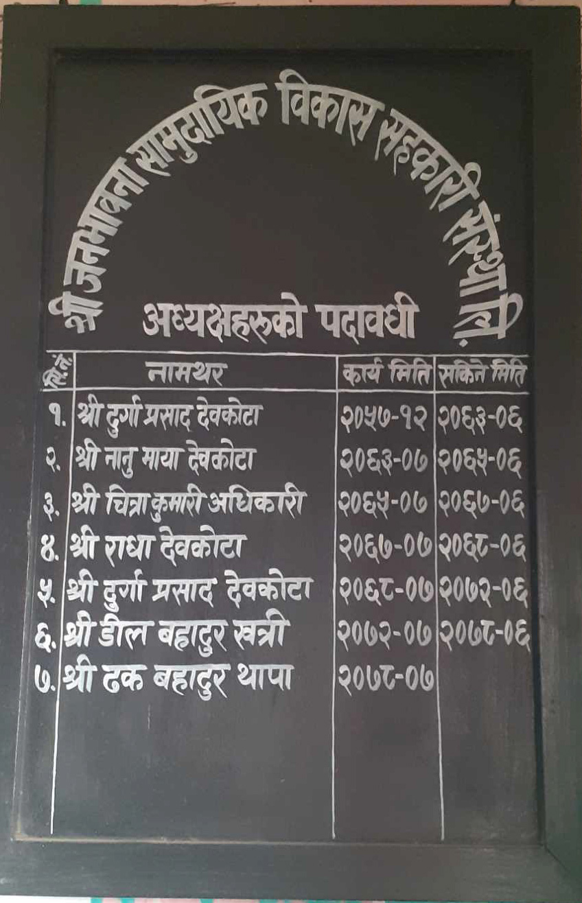

More about Us
संचालक समितिको काम, कर्तव्य र अधिकार :
समितिले सदस्यहरूको हितलाई ध्यानमा राखी देहाय बमोजिमका कार्यहरु गर्नेछन् :-
१) संस्थाको समग्र व्यवस्थापन गर्ने ।
२) निर्धारित मापदण्डका आधारमा सदस्यता विस्तार गर्ने वा खारेज गर्ने।
३) काराेबारका हरहिसाव अत्यावधिक गरि गराई सोको विवरण प्रमाणित गर्ने।
४) उप समितिहरुको गठन र विघटन गर्ने।
५) संस्थाको स्वीकृत दरवन्दीमा योग्यताका आधारमा व्यवस्थापक लगाएत अन्य कर्मचारी छनौटगरि नियुक्ति गर्ने र कर्मचारीहरुको तलब भत्ता एवम् सुविधा निर्धारण गर्ने ।
६) संस्था संचालन सम्बन्धमा आवश्यक सम्पूर्ण कानुनी कार्यहरु गर्ने र आवश्यकता अनुसार कानुनी सेवा लिने सम्बन्धी निर्णय गर्ने ।
७) संस्थाको योजना र वार्षिक बजेट साधारण सभामा स्वीकृतिको लागि पेस गर्ने।
८) संचालक समिति र लेखा समितिका रिक्त पद पूर्ति वा संचालकको पदावधि सकिनु अगावै नयाँ समिति निर्वाचनको कार्य निष्पक्ष र स्वतन्त्र ढंगले सम्पन्न गर्ने तोकिए बमोजिम निर्वाचन समिति गठन गर्ने।
९) विनियममा व्यवस्था भएका प्रावधानका आधारमा प्रक्रियागत ढंगले सभा बोलाउने र सभाको उचित व्यवस्थापन गर्ने।
१०) साधारण सभाले निर्देश गरेका वा स्वीकृत गरेका कामहरु गर्ने।
११) साधारण सभाको प्रत्यायोजित अधिकारका आधारमा समयमै निर्धारित प्रक्रिया पुरा गरी गराई लेखा परिक्षकको नियुक्ति गरि संस्थाको हरहिसाव लेखा परीक्षण गराउने ।
१२) साधारण सभाको बैठकमा पेश गरिने प्रतिवेदनहरु, बजेट तथा कार्यक्रमहरु, नीतिको मस्यौदाहरु, महत्वपूर्ण निर्णय अनुमोदन आदिको तयारी गर्ने।
१३) संस्थाको व्यवस्थापन चुस्त राख्न वित्तिय विश्लेषण र अनुगमनको लागि PEARLS अनुगमन पद्धतिको अवलम्बन गर्ने। यसको लागि संस्थाका संचालक, लेखा समितिका पदाधिकारी र कर्मचारीलाई आवश्यकता अनुसार तालिममा सहभागि गराउने व्यवस्था गर्ने।
१४) पदाधिकारी एवम् कर्मचारीको ज्ञान, सिप र काममा रुचि बढाउन तालिम एवम् अध्ययन भ्रमणको कार्यक्रम बनाउने साथै कर्मचारीहरुका लागि Incentive Package को योजना बनाउने ।
Tenure of Presidents(अध्यक्षहरुको पदावधी )

सहकारीको नियमहरूः
१) सम्बन्धित सदस्यहरुको पासबुकमा फोटो अनिवार्य रुपमा टाँस्नु पर्नेछ ।
२) निक्षेप खातामा जम्मा भएको रकम तोकिएको म्याद पूरा भएपछी मात्र झिक्न सकिनेछ।
३) खाता नामसारी गर्न सकिनेछ तर नामसारी गर्ने व्यक्तिको नाममा समेत संस्थामा खाता हुनु पर्दछ ।
४) सम्वन्धित सदस्यले आफैँ आई अथवा संस्थाद्धारा खटाईएको कर्मचारी मार्फत कम्तिमा महिनाको एक पटक पासबुक रुजु गराउनु पर्नेछ ।
१५) बचत गर्दाको बखतामा संस्थाद्धारा तोकिएको व्याजदर नै अन्तिम र मान्य हुनेछ।
६) सामान्यतया व्याजदरमा हेरफेर हुँदैन र हुने भएमा साधारण सभाबाट परित भएको मितिले ३५ दिन भित्रमा सम्पूर्ण सदस्यहरुलाई जानकारी गराईनेछ ।
७) खाता तोकिएको समयपछि नविकरण गर्न सकिने छ ।
८) संस्थाको कुनै सदस्यले ऋण लिंदा आफु जमानी बसेको भएमा निजको साँवा व्याज लगाएत सम्पूर्ण रकम चुक्ता नभएसम्म जमानीको खाताको रकम पुर्णत रोक्का हुनेछ।
९) पासबुक हराएमा वा अर्को बनाउनु परेमा रु. ५० तिरी नयाँ पासबुक बनाउन सकिनेछ । तर पासबुक हराएमा कार्यालयमा तुरुन्त जानकारी गराउनु पर्नेछ ।
१०) जुनसुकै कार्यको लागि पनि संस्थाको नियम अन्तिम र निर्णायक हुनेछ ।
श्री जनभावना सामुदायिक विकास सहकारी संस्था लिमिटेडकाे सा. वि. स. हरु :-
१ राधाकृष्ण
२ शिवशत्ति
३ जानकि
४ मर्स्याङ्दी
५ माछापुच्छ्रे
६ गाैरीशंकर
७ सगरमाथा
८ जनजागृति
९ आदर्श
१० नवज्योति
११ अन्नपूर्ण
१२ संघर्षशील
३ उन्नतिशिल
१४ सरस्वती
१५ सिर्जना
१६ गण्डकी
१७ तालदेवि
१८ सत्यदेवी
१९ देवीस्थान
२० जनसेवा
२१ हिरामुनिटार
२२ रानिटार
२३ देउराली
व्यवस्थापकको काम, कर्तव्य र अधिकारः
१) संस्थाको आर्थिक तथा प्रशासनिक कार्यको पूर्ण जिम्मेवारी वहन गरी कोषाध्यक्षलाई सहयोग गर्ने।
२) संस्थामा सदस्यता आवेदन फारमहरु संकलन एवं विवरण तयार गरि समितिमा प्रस्तुत गर्ने र आवश्यक सूचनाहरु उपलब्ध गराउने ।
३) साधारणसभा, समितिका सवै वैठकहरुमा नाम लिने र निर्णय लिने कामका लागि सदस्यहरुलाई आवश्यक सूचना उपलब्ध गराउने ।
४) वार्षिक योजना तथा बजेट तयार गरी समिति समक्ष पेश गर्ने।
५) समिति र साधारणसभाका बैठकहरुको विषय सूची तयार गर्ने ।
६) संस्थाका सदस्यहरुलाई शैक्षिक एवम् तालिम कार्यक्रमहरुको योजना बनाई शिक्षा उपसमिति मार्फत संचालन गर्न सहयोग पुर्याउने ।
७) संस्थाका सबै कर्मचारीहरुको काम कारवाहीहरुमा सुचाय सभा संचालन गराउने र कर्मचारी वीच समन्वय गर्ने ।
८) समितिले तोकेको कामहरु गर्ने गराउने ।
९) समिति प्रति उत्तरदायी हुने ।
१०) संस्थामा रहेका चल अचल सम्पत्तिको अभिलेख राख्ने र ले.प.भएपछि हासकट्टि गरि समितिबाट अनुमोदन गराई राख्ने ।
सहकारी गीत
सत्य बोल्छौं, अनुशासित परिश्रमी हुनेछौं
फजुल खर्च नगरेर बचत गर्ने छौं।
सफा राख्छौं घर आँगन बालबच्चालाई
समुहमा मिली बस्छौं सधैं सधैलाई ।।
विडी, चुरोट, खैनी, रक्सी अब खाने होईन
परिवार सानो राख्छौँ, झुटो बोलिदैन ।
गरिदैन अन्याय त सहिदैन पनि
जे जे बोल्छौं गरी छाड्छौँ हामी स्वाभिमानी ।।
सदस्यता प्राप्त गर्ने प्रक्रिया :
- कार्यक्षेत्र भित्र स्थायी रुपले बसोबास गरेको हुनु पर्नेछ ।
- नेपाली नागरिकताको प्रमाण पत्र प्राप्त गरेको हुनुपर्नेछ ।
Designed by Biplov Devkota